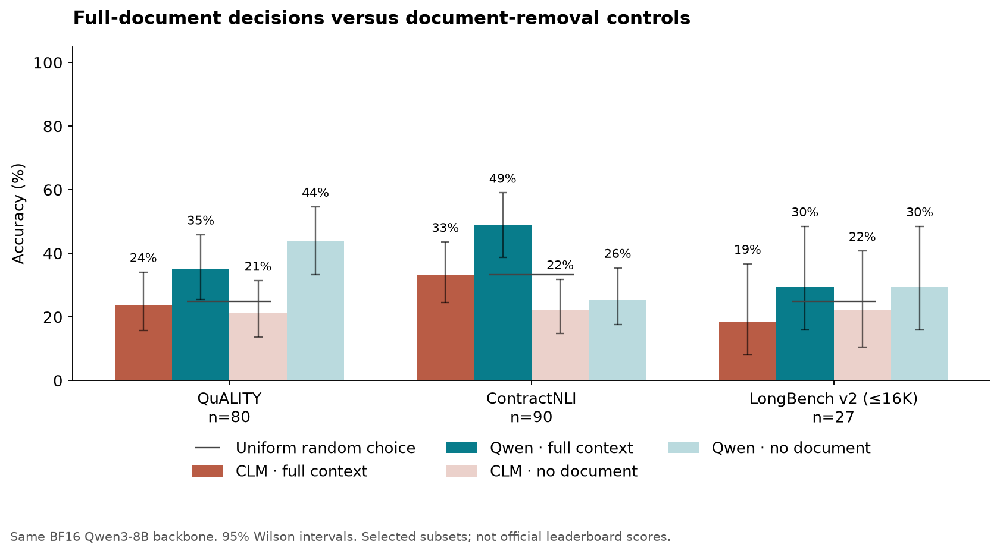
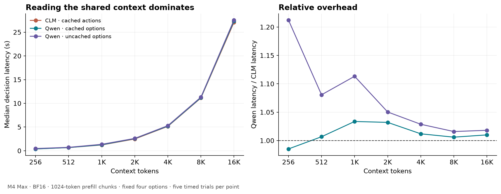

2 October 2026 · local reproducible evaluation
Does constrained Qwen retain accuracy when the decision needs a long document?
Follow-up qualification: a RACE-M experiment with shorter, context-dependent questions found a large Qwen prompt-layout effect on a separate development sample: 60% with this report's options-in-system layout versus 92.5% with passage–question–options order. The long-document results below remain valid for the recorded prompt, but should not be interpreted as prompt-independent model-capacity measurements. These long-document samples have not been rerun with the new layout.
197 public-dataset questions, 818 predictions, complete documents, the same frozen BF16 Qwen3-8B backbone, no model fine-tuning or hidden reasoning tokens. These are explicitly selected diagnostic subsets, not official benchmark scores.
For the fixed four-option latency test, at 16,384 context tokens CLM took 27.08 seconds and uncached constrained Qwen took 27.57 seconds: only 1.8% overhead. The measurements support the claim that option-processing cost becomes relatively small as the shared context grows.
Constrained Qwen is numerically more accurate on all three selected datasets. Only the ContractNLI paired 95% interval excludes zero before adjustment for multiple comparisons. Neither approach is a reliable long-document solver here: Qwen benefits clearly from the contracts, but gets no accuracy gain from the LongBench documents and scores lower with the QuALITY articles than without them. CLM predicts “not mentioned” on 88 of 90 contracts.
Accuracy

Paired comparison
The same questions are scored for both methods. Bootstrap intervals use 10,000 paired resamples. Exact McNemar tests use only discordant pairs. Results are exploratory; intervals and p-values do not account for training-data contamination, prompt selection, or generalization beyond these subsets. No multiple-comparison correction is applied.
Did the context help?
In the document-removal control, the question and identical answer choices remain. The document is replaced with an empty string. Full and control predictions share the same gold answer. A positive gain supports use of the document on this sample; it does not prove that every correct answer requires the entire document. A negative gain indicates that this scoring setup became less accurate when given the document.
Latency as context grows
For a fixed option budget A and shared context length N, the rough comparison is CLM ≈ F(N) + head cost versus uncached constrained Qwen ≈ F(N+A) + output cost. If A stays fixed while N grows, their relative prefill costs should approach one under comparable kernels. This is a relative-cost claim, not a guarantee of equal absolute latency on every implementation, and it does not apply when the options themselves grow with the context.

The controlled sweep holds four option descriptions fixed and varies natural document text from 256 to 16,384 tokens. It is a compute benchmark, not an accuracy test: shorter excerpts may omit evidence, and the text is repeated only when needed to fill the longest point. All methods use a process-local 24 GiB wired-memory limit to avoid paging the backbone, use 1024-token prefill chunks, preserve all tokens and materialize GPU output before stopping the timer. Each point has one warm-up per method followed by five timed trials in randomized order. CLM action vectors and the cached Qwen prefix are prepared outside the timing. Qwen uncached processes its option text on every call. There are no whole-state cache hits or HTTP calls. Finite-length kernel effects and ordinary device variance can produce ratios slightly above or below one.
Subgroups and option order
The primary option order was randomized once with the fixed seed. Reversal was preselected for ten questions per dataset before any model outputs existed. CLM independent action scores are permutation-equivariant by construction; the extra inference audit measures Qwen's prompt sensitivity. There is no answer-order ensembling in the primary result.
Qwen changed its answer on 15/30 reversed-order cases: 7/10 QuALITY, 1/10 ContractNLI, and 7/10 LongBench. This is a material sensitivity even though aggregate accuracy barely changed. Original answer strings were preserved; nine QuALITY cases contain surrounding whitespace in at least one option. The separately labeled 71-case whitespace-free subgroup is a post-hoc formatting audit, not a replacement primary sample.
Data selection, fixed before inference
- QuALITY v1.0.1 development set: 80 distinct articles, 40 hard and 40 easy questions. Only questions whose median human annotation says at least one-third of the passage is needed are eligible. The full HTML-stripped articles are supplied.
- ContractNLI test set: 90 distinct contracts, 30 examples each of entailment, contradiction and not-mentioned. Documents below 1024 tokens are excluded. This balances the original imbalanced labels and is not the official test distribution. Only NLI accuracy is evaluated, not evidence-span extraction.
- LongBench v2: all 27 eligible unique documents from the publisher's short category whose complete prompts fit within 16,384 tokens. The source has 503 questions; this is a small, length-selected subset concentrated in document QA, not an evaluation of its full task coverage. The Hugging Face split is named train, but it contains the published evaluation questions; no training was performed.
All selected contexts contain at least 1024 tokens. No selected document was truncated, summarized, retrieved in pieces or padded for the accuracy evaluation. One question is selected per document within each dataset, and candidates are randomized with seed 20261002. Data hashes, source revisions and case IDs are in the manifest. The frozen case file SHA-256 is 475fa49053e5a5e0dcb5396db7e1e31145789f6ce5d97a8a968faf89c8de5d67.
Model and prompt controls
A six-case implementation diagnostic selected the first two frozen questions from each dataset without conditioning on correctness. Recomputing Qwen with a full-vocabulary output projection and uncached prompt reproduced all six primary choices. Allowed letters carried at least 99.978% of the unrestricted next-token probability. Thus these errors were not caused by forcing an implausible first-token format. Moving the options to the end changed predictions but scored 2/6 versus 3/6 for the original layout; this small exploratory check was not used to change the primary prompt. See the diagnostic outputs.
The released CLM-v0.1 heads use their original last-token representation, normalized input embeddings, FP32 projection heads, output normalization and checkpoint logit-scale clamp. The backbone is the original Qwen/Qwen3-8B in BF16. Qwen uses the same backbone and its original output weights, enable_thinking=False, and a single forced choice among verified one-token A/B/C/D labels. Options appear in the system message, document and question in the user message. No answer explanation, extra autoregressive step or external model is used.
Chunked prefill is a memory-management choice, not context compression: the KV cache retains all earlier tokens. A 2050-token spot-check of chunked versus unchunked computation gave cosine agreement 0.999970. The prior investigation also checked backbone embeddings against Transformers and the CLM head port against PyTorch. Full-document timing includes tokenization, prefix-copy overhead and scoring, but excludes candidate/prefix setup. Setup durations are preserved separately in the answer log. Earlier accuracy predictions were collected before the process-local wired-memory setting was enabled; this does not change the computation, but their per-question timings can contain paging noise. Only the separate, consistently configured latency sweep is used for the speed comparison.
This evaluates off-the-shelf released models. The CLM server defaults to a 2048-token limit, which its documentation allows increasing; the long-context run increases the effective limit and does not train new heads. Thus it measures whether the existing head generalizes to these long inputs, not the best achievable long-context CLM after fine-tuning. Model training sets may overlap public benchmarks; contamination is not audited. A single prompt template per task is used without answer-driven tuning.
Artifacts and reproduction
Summary and statistics · Every prediction and probability · Frozen input cases · Every timing trial · Runtime metadata
uv pip install --python .venv/bin/python -r experiments/requirements-long-context-lock.txt
.venv/bin/python experiments/download_long_context.py
.venv/bin/python experiments/prepare_long_context.py
.venv/bin/python -u experiments/long_context_bench.py
.venv/bin/python experiments/analyze_long_context.py
The benchmark resumes existing outputs. To perform a separate fresh run, preserve this results directory and use a separate copy of the project or change the output path. Sources: Pang et al., QuALITY (NAACL 2022); Koreeda and Manning, ContractNLI (Findings of EMNLP 2021); Bai et al., LongBench v2 (ACL 2025). See linked dataset repositories for licenses and full citations.